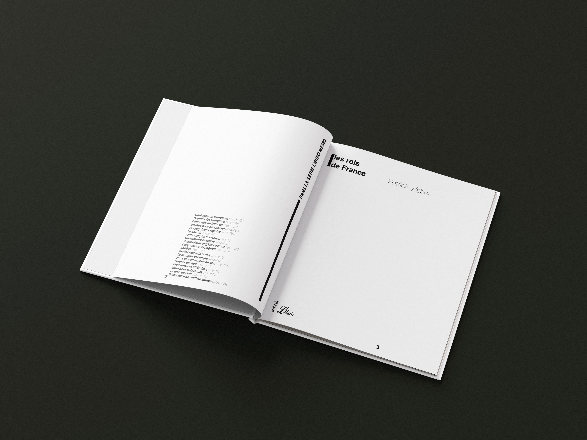
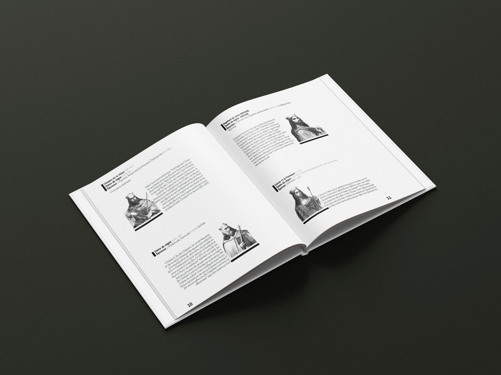
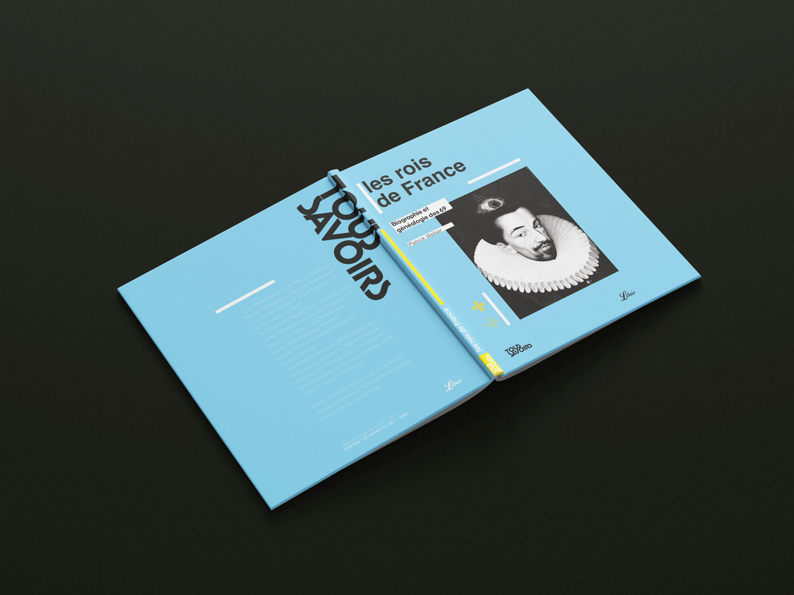
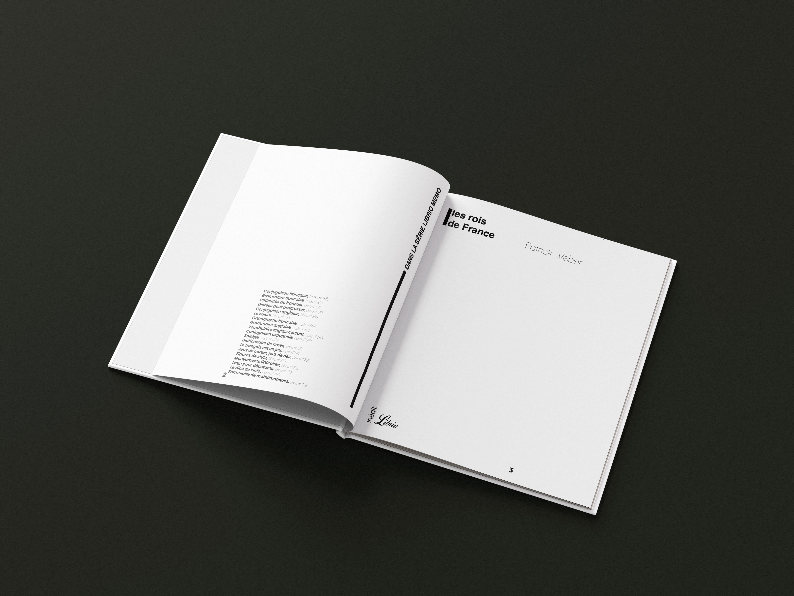
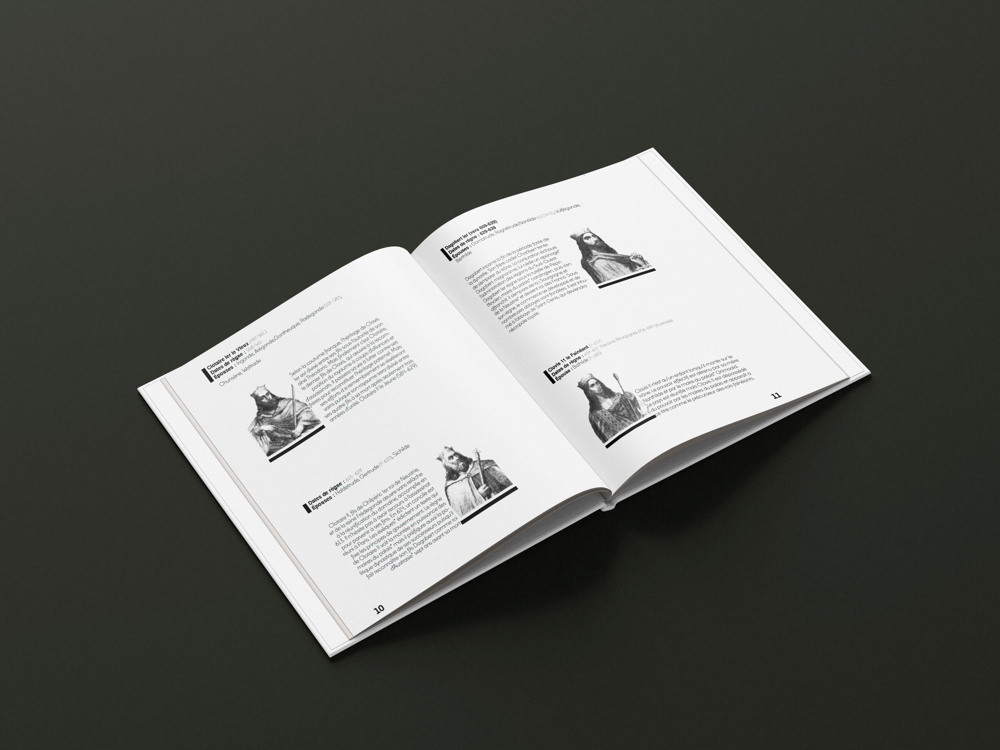
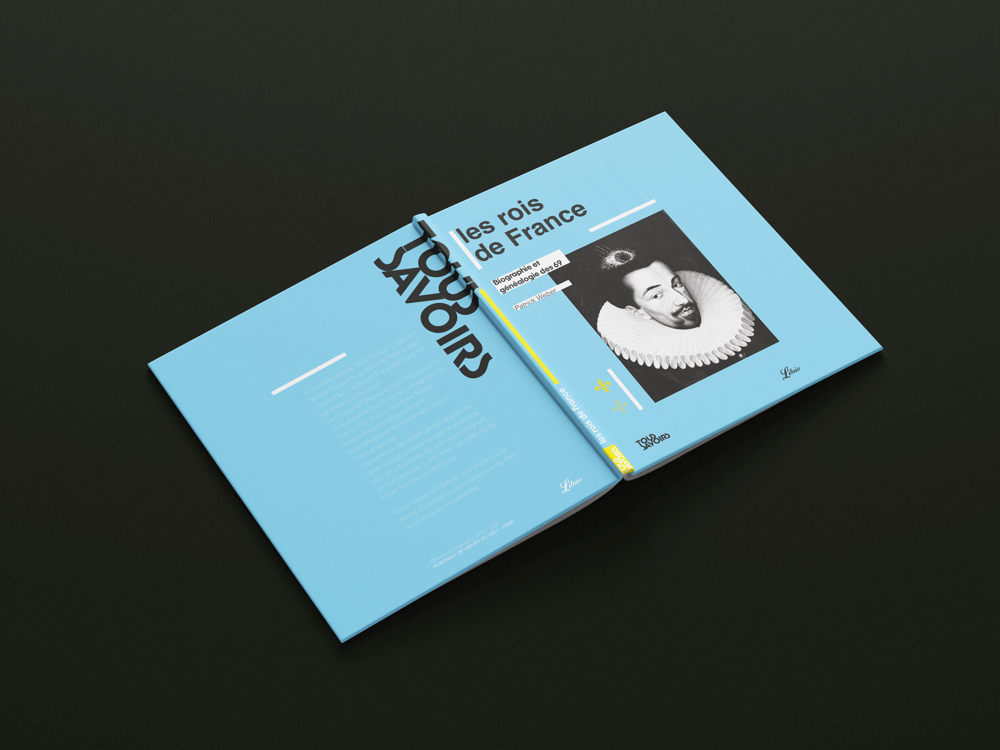

Tous Savoirs
Le projet consistait à concevoir l’identité graphique de la nouvelle collection “Tous Savoirs” des éditions Librio. Destinée à un public en quête de références fiables et facilement consultables, cette série propose des ouvrages clairs et pratiques, offrant des informations synthétiques. Mon travail portait sur la création du logotype, le design des couvertures, ainsi que la mise en page intérieure, afin de garantir un accès rapide et intuitif à l’information.